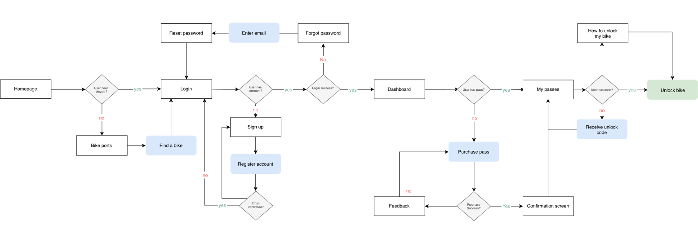
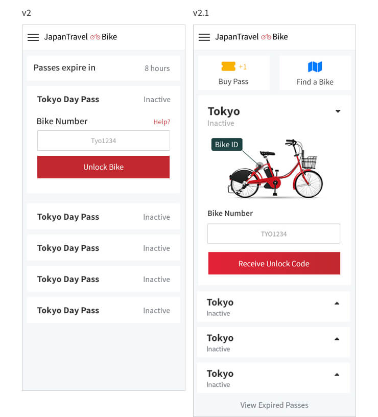
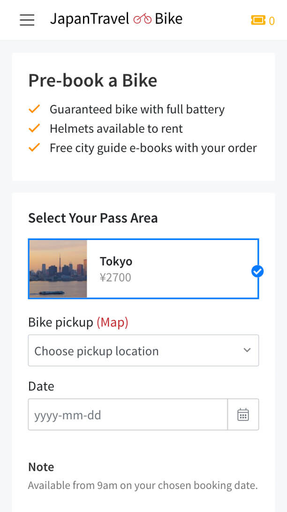

Japan Travel Bike is an online reseller built on top of Docomo's bikesharing service enabling travellers to rent bikes for a day around various cities in Japan including highly visited tourist locations such as Tokyo, Osaka and Nara.
Core Team
- Software Engineer
- Creative Director
- Lead Designer (Me)
My Role
- User research
- Product design
- Front-end development
- Branding
The Impact
- Reduced amount of time taken to unlock a bike by 57%
- Decreased costs by reducing bike return issues by 99%
- Increased return user by 18%
Kicking off: How it all started
Bike-sharing is a popular concept around the world and a variety of these programs exist in global cities such as New York, Amsterdam and nowadays in Tokyo.
Docomo’s original bicycle service was provided in Japanese only, and to unlock a bicycle, users had to go through a tiresome process which took approximately 10 to 15 minutes. This is where Japan Travel saw an opportunity and started Japan Travel Bike as a service for travelers.
The challenge
Before starting this project we validated the concept of this service by creating an MVP reusing design patterns from an earlier product. The concept was considered a success once bicycle passes were frequently purchased and travelers started using bicycles.
“I Think it’s really useful to be able to rent a bike for a day so that you can avoid crowded public transportation. Especially for short distances such as Shibuya to Harajuku.”
My next challenge was to fully redesign, improve and iterate our service within 3 weeks. The goal was to make the web-app effortless by focussing on the core user tasks of buying and using a bike pass.
Research
With limited time, I began my research process by using the service combined with a task analysis to get a better understanding of the user journey and tasks involved. Next, I used analytics, online recordings, and heatmaps to identify where users got stuck most often.
| Goal | Task | Pain Points |
|---|---|---|
| Account creation |
|
|
| Purchasing a pass |
|
|
| Finding a bicycle |
|
|
| Unlocking a bicycle |
|
|
| Returning a bicycle |
|
|
To make sure we were solving the right problem and not just optimizing the service, I also created proto-personas through interviewing the stakeholders on the project.
Analysis
By consolidating the qualitative and quantitative research I was able to identify the most common user problems:
Unable to find a bicycle
As the app did not show bike availability, users became incredibly frustrated when walking to multiple bike-ports unable to find a bicycle.
Auto renewals by not returning bikes
Users would forget or not return their bike in time, resulting in automatic renewals when not intended. Costing either the user or the business money.
Group purchases
Data revealed that users in groups would generally order multiple passes on 1 account rather than separate, suggesting users required unlocking multiple bikes within 1 interface efficiently.
Unlocking a bicycle is difficult
Recordings showed that users got stuck because the process was still difficult and confusing.
Riding in a foreign global city is intimidating
Not all users have the confidence or knowledge to navigate Tokyo’s busy streets by themselves.
A new flow: optimising for speed
As the primary user goal was to use a bike, not the app, I focused on the metric of reducing the amount of time taken to unlock a bike.
I created a task-flow of the steps taken from start to unlocking a bicycle to map bottlenecks and identify where processes could be improved. It turned out 3 bottlenecks could be improved:
- The signup flow
- Checkout confirmation
- Unlocking a bicycle
Optimizing the first option would come with potential security risks so I focussed on improving the flow of unlocking a bicycle and by removing redundant tasks in the checkout process.

Unlocking multiple bicycles
When buying multiple passes, users could not see which pass belonged to which bicycle, resulting in a lot of back and forward navigating between screens.
The problem was caused by technological constraints, consisting of a limit on API calls. By collaborating with the lead engineer, Ahammad Reyad, I designed a new flow. In this new flow, the app only makes an API call when users touch a primary action button rather than having a call for all bike-passes on page-load.

Using Dan Saffer’s micro interaction concept of bringing the data forward, I designed a pass where users immediately could see which pass was attached to which bike.
Testing and iterating the concept
To validate the new flow, I tested the concept on a handful of users with an Invision prototype.
User testing revealed the new flow was quicker, but users still had problems unlocking their bicycles. Using visual cues combined with help modals aided users on how to unlock their bike without interrupting their flow, reducing unlock and locking times by 225%.

Reducing costs and returning bikes
When users would forget to return, or not properly lock their bikes, their day passes would auto-renew and charge money.
Even though the goal was to make the app effortless, I solved this problem by creating more friction and adding several nudges to remind users to return the bicycle.
In the redesign, the user receives a heads-up message when the user unlocks a bicycle for the first time combined with a notification through email as a reminder.
One hour before midnight, when the passes automatically renew, the app sends them another reminder through email if the bikes are still unlocked. Inside the app, a countdown shows the amount of time left before passes auto-renew when bikes are not returned.
Pass Renewal in:
One-Day Passes Will Auto-renew for the following day if any activated bike has not been returned by midnight
Adding the extra friction and nudges reduced the bicycle return rate issues by 99%. In the rare case where a user loses a bicycle, we have a customer support centre available to support and guide users.
Finding a bike - a new service
The biggest frustration users had was not being able to see if bikes were available at a bike port. This meant that a user would have to walk a long way to a bike port with the risk of no bikes being available. The problem was yet again caused by a technical limitation, which this time not solvable through a restructure.
To get around this issue we launched a new reservation service where users can pre-book a bicycle for the next day at a designated bike station. This way we can guarantee travelers starting their day with a full-charged bicycle and have no issues in finding one, even though it doesn't solve the actual problem for immediate bicycle availability. Since this service costs a little extra, we added in a free city cycling guide increasing user satisfaction.

Branding
Since Japan Travel Bike is a new service I also designed its branding. As it is a sub-brand of Japan Travel I used the same color schemes used in Japan Travel's branding. I decided to keep the logo simple and created a bicycle logo with obscure initials of JT.
I created additional marketing assets including stickers that were placed on the back of the bicycles. The main challenge of these stickers was getting approval of all governments involved, however, by creating a variety of options they eventually could all come to an agreement. I've also created several dynamic web-banners used on japantravel.com and other websites for additional promotion.


The results
Although I'm not completely satisfied with users not being able to detect if bikes are available at a bike port due to the technical limitations, the service launch and renewal has been a great success. Thousands of bike passes have been purchased and we were able to meet our goals by getting rid off most major pain points.
Users are now able to unlock bikes in seconds (when available) or prebook one in advance and happily ride around the city while escaping the infamous Tokyo rush hour trains.
“We loved Japan Travel Bike – just find a bike and you're good to go. I never anticipated seeing such a different side of Tokyo – it certainly beats the busy trains!”